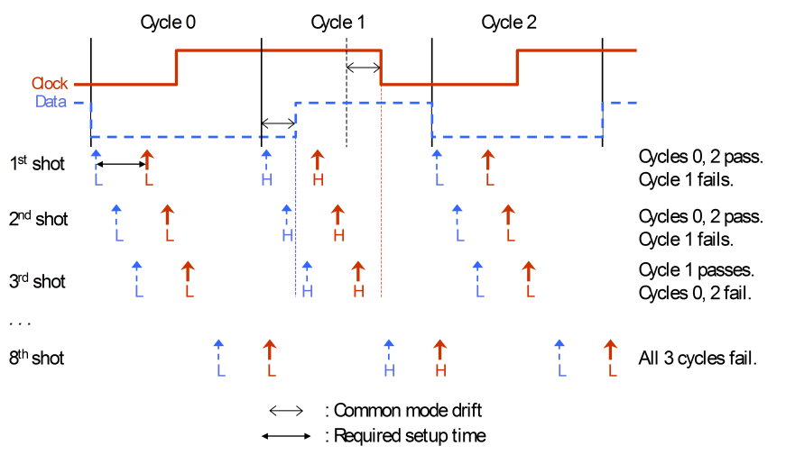

Principles of source synchronous testing
In source synchronous devices, the phase of the device output clock and the output data cannot only show a static offset relative to the reference clock (which varies from device to device), but also a common dynamic distortion during execution of a pattern. This distortion can be the same for each pattern execution on the same device (deterministic distortion), but it can also vary from one pattern execution to the next.
Both these cases are to be tolerated if the relative timing of the device clock and the data signal still satisfies certain requirements (setup time, hold time). Therefore the task for testing source synchronous devices is to distinguish reliably between such common mode phase variations and genuine violations of the relative timing requirements. The minimum setup time can serve as an example for the solution of this task:
The relative setup time for a data change is observed if there are points in time p1 and p2 within the tester cycle that satisfy the following conditions:
- p2 = p1 + required setup time
- The output data already has the new value at p1.
- The output clock still has the old value at p2.
In principle, this can be validated by comparing the data and the clock signal with these expected values and placing the respective compare edges at the distance of the required setup time. But in the presence of common phase distortion, these points (if they exist) can have a different delay relative to the start of the tester cycle in different cycles, so that they cannot be found by a single pattern execution. Rather, the tester cycle must be scanned systematically in search of p1 and p2.
Therefore, the pattern must be executed repeatedly. With each shot, the compare edges for the clock and data pins are moved in parallel (so that their distance remains equal to the setup time) by a certain step width.
If the phase distortion is deterministic, then the required points will (usually) be found if they exist, provided that the step width is small enough, and the pattern is repeated often enough. Even if the distortion varies from test execution to test execution, the specified criterion is still valid. But of course, the risk of missing the required p1 and p2, although they exist, will be greater in this latter case.
A cycle can then be accepted as passed if it passes at least in one shot. Since different cycles can pass in different shots, the whole pattern can be accepted as passed if every cycle passes at least in one shot. Note that this requires a disjunctive accumulation of the individual shots.
Example
The following figure illustrates the principle by a very simple example with deterministic phase distortion (common mode drift):

In this example, the pattern is repeated eight times. This is a certain redundancy since every cycle has passed at least in one shot already after the third shot. If unnecessary shots are to be avoided, the overall result would have to be checked after each shot.
So far, it has been assumed that only one data change occurs in every cycle, so that only one result per cycle is required. But you can also check several changes in one cycle. In this case you would have to record results on the edge level (all eight edges are recorded in one shot). In this case the whole pattern would be considered as passed if every edge passes at least in one shot.
The above discussion centers on validation of a given requirement. But you can also measure the actual setup time by setting the distance between the data edge and the clock edge to 0. The setup time will then be the time between the first and the last point where the expected values are received for both data and clock.
A group of output data pins and the associated output clock pin is called a synchronization group. One source synchronous device may contain several synchronization groups.